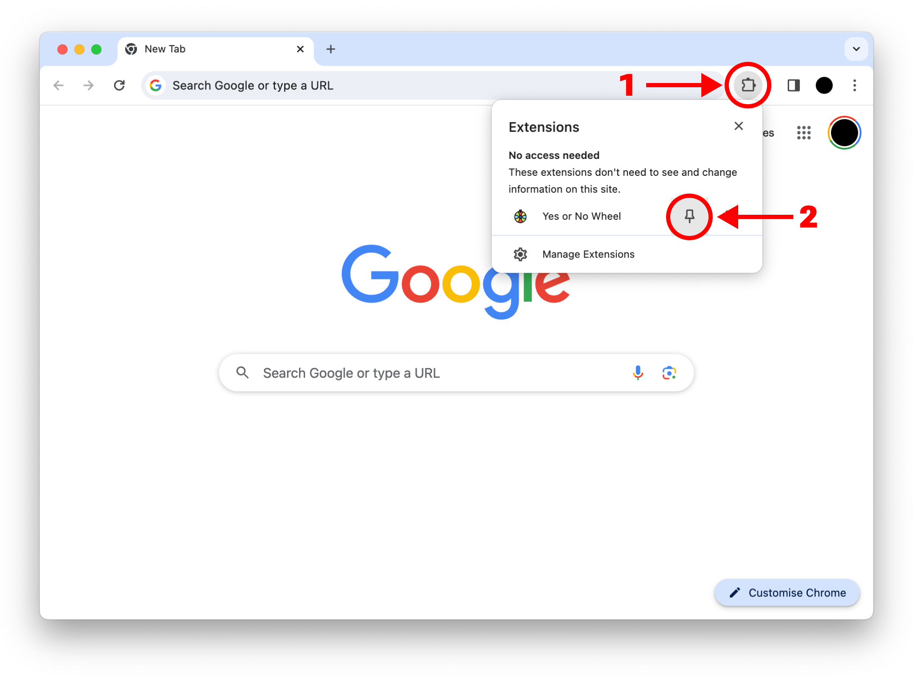
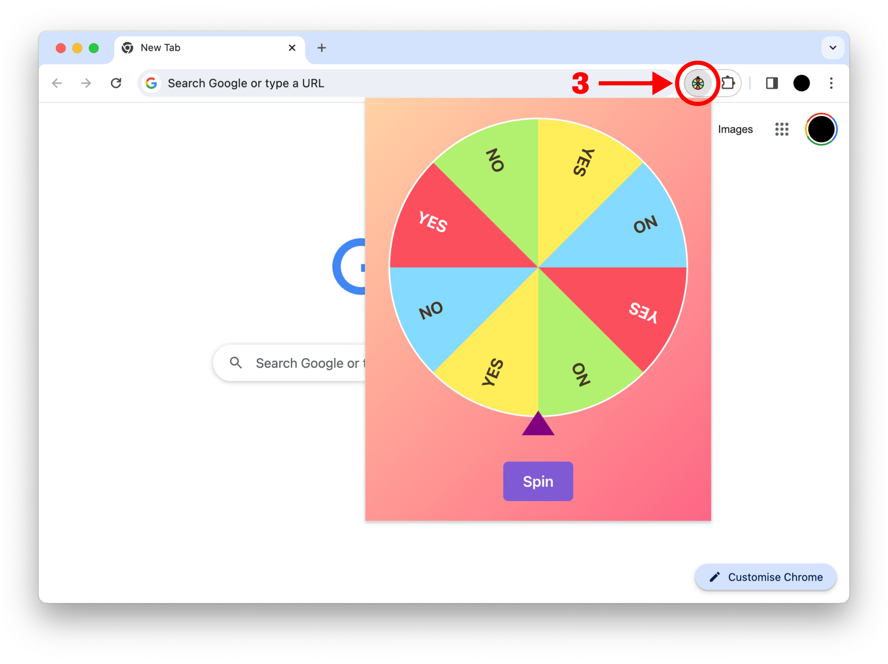

Click the puzzle piece icon (1) in the top right corner of your browser. Then, click the small pin icon (2) next to the extension:

Open the extension (3) on any page to view and manage your clipboard history:

The extension will automatically keep track of all your clipboard operations — you just need to have Chrome open.